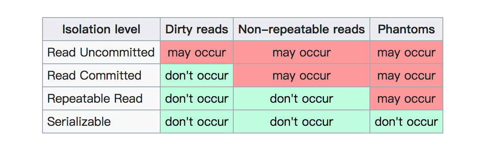
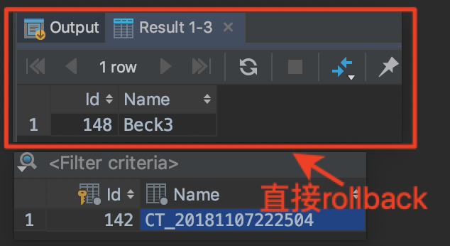
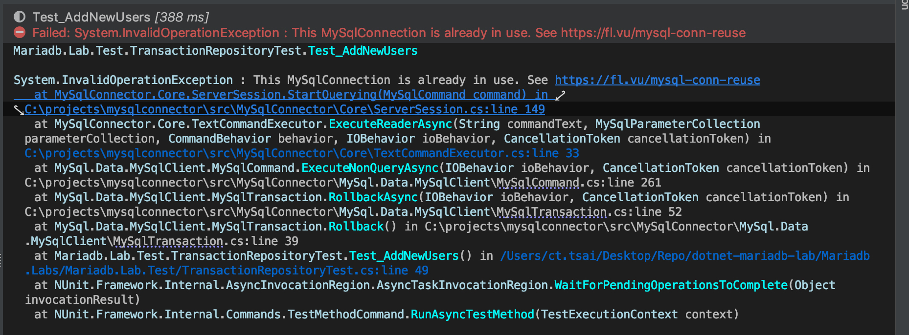
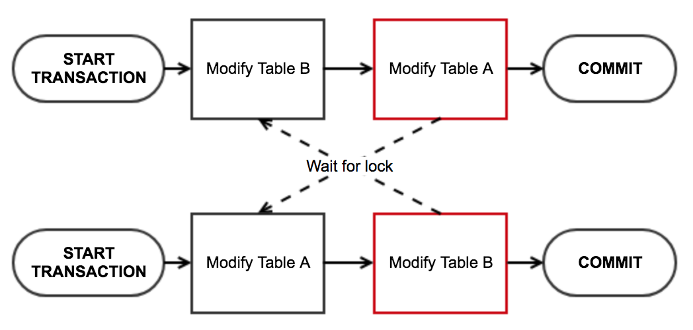

<!doctype html><html lang="zh-tw" class="theme-next mist use-motion"><head><meta charset="UTF-8"><meta http-equiv="X-UA-Compatible" content="IE=edge,chrome=1"><meta name="viewport" content="width=device-width,initial-scale=1,maximum-scale=1"><meta http-equiv="Cache-Control" content="no-transform"><meta http-equiv="Cache-Control" content="no-siteapp"><meta name="keywords" content=".NET Core,C#,.NET Standard,MySQL,MariaDB,Transaction,"><link rel="alternate" href="/atom.xml" title="Blackie's Failed Notes" type="application/atom+xml"><meta property="fb:admins" content="1227534428"><meta property="fb:app_id" content="1912565115693515"><meta name="description" content="介紹如何使用 MySqlConnector 讓 .NET Standard/.NET Core 可以對 MariaDB/MySQL 進行 Transaction 與 TransactionScope 操作．"><meta name="keywords" content=".NET Core,C#,.NET Standard,MySQL,MariaDB,Transaction"><meta property="og:type" content="article"><meta property="og:title" content="MariaDB&#x2F;MySQL Transaction with .NET Standard"><meta property="og:url" content="https://blackie1019.github.io/2018/11/07/MariaDB-MySQL-Transaction-with-NET-Standard/index.html"><meta property="og:site_name" content="Blackie&#39;s Failed Notes"><meta property="og:description" content="介紹如何使用 MySqlConnector 讓 .NET Standard/.NET Core 可以對 MariaDB/MySQL 進行 Transaction 與 TransactionScope 操作．"><meta property="og:locale" content="en"><meta property="og:image" content="https://blackie1019.github.io/2018/11/07/MariaDB-MySQL-Transaction-with-NET-Standard/Isolation_Level.png"><meta property="og:image" content="https://blackie1019.github.io/2018/11/07/MariaDB-MySQL-Transaction-with-NET-Standard/rollback.png"><meta property="og:image" content="https://blackie1019.github.io/2018/11/07/MariaDB-MySQL-Transaction-with-NET-Standard/datareader.png"><meta property="og:image" content="https://blackie1019.github.io/2018/11/07/MariaDB-MySQL-Transaction-with-NET-Standard/lock.png"><meta property="og:updated_time" content="2021-06-15T03:56:53.293Z"><meta name="twitter:card" content="summary"><meta name="twitter:title" content="MariaDB&#x2F;MySQL Transaction with .NET Standard"><meta name="twitter:description" content="介紹如何使用 MySqlConnector 讓 .NET Standard/.NET Core 可以對 MariaDB/MySQL 進行 Transaction 與 TransactionScope 操作．"><meta name="twitter:image" content="https://blackie1019.github.io/2018/11/07/MariaDB-MySQL-Transaction-with-NET-Standard/Isolation_Level.png"><meta name="twitter:creator" content="@211427260"><meta property="fb:admins" content="1227534428"><meta property="fb:app_id" content="1912565115693515"><script>!function(u){"use strict";var e=function(e,t,n){function r(){l.addEventListener&&l.removeEventListener("load",r),l.media=n||"all"}var o,a=u.document,l=a.createElement("link");if(t)o=t;else{var i=(a.body||a.getElementsByTagName("head")[0]).childNodes;o=i[i.length-1]}var d=a.styleSheets;l.rel="stylesheet",l.href=e,l.media="only x",function e(t){return a.body?t():void setTimeout(function(){e(t)})}(function(){o.parentNode.insertBefore(l,t?o:o.nextSibling)});var s=function(e){for(var t=l.href,n=d.length;n--;)if(d[n].href===t)return e();setTimeout(function(){s(e)})};return l.addEventListener&&l.addEventListener("load",r),(l.onloadcssdefined=s)(r),l};if("undefined"!=typeof exports?exports.loadCSS=e:u.loadCSS=e,u.loadCSS){var t=e.relpreload={};if(t.support=function(){try{return u.document.createElement("link").relList.supports("preload")}catch(e){return!1}},t.poly=function(){for(var e=u.document.getElementsByTagName("link"),t=0;t<e.length;t++){var n=e[t];"preload"===n.rel&&"style"===n.getAttribute("as")&&(u.loadCSS(n.href,n),n.rel=null)}},!t.support()){t.poly();var n=u.setInterval(t.poly,300);u.addEventListener&&u.addEventListener("load",function(){u.clearInterval(n)}),u.attachEvent&&u.attachEvent("onload",function(){u.clearInterval(n)})}}}("undefined"!=typeof global?global:this)</script><link rel="stylesheet" as="style" onload='this.rel="stylesheet"' href="/bundle/essential.css?v=5.0.1" type="text/css"><link rel="preload" as="style" onload='this.rel="stylesheet"' href="/bundle/advance.css?v=5.0.1" type="text/css"><noscript><link rel="stylesheet" href="/bundle/all.min.css?v=5.0.1"></noscript><link rel="shortcut icon" type="image/x-icon" href="/images/favicon.ico?v=5.0.1"><script type="text/javascript" id="hexo.configuration">var NexT=window.NexT||{},CONFIG={scheme:"Mist",sidebar:{position:"right",display:"always"},fancybox:!0,motion:!0,duoshuo:{userId:0,author:"Author"}}</script><title>MariaDB/MySQL Transaction with .NET Standard | Blackie's Failed Notes</title></head><body itemscope itemtype="http://schema.org/WebPage" lang="en"><script>window.fbAsyncInit=function(){FB.init({appId:"1912565115693515",xfbml:!0,version:"v2.5"})},function(e,n,t){var o,c=e.getElementsByTagName(n)[0];e.getElementById(t)||((o=e.createElement(n)).id=t,o.src="//connect.facebook.net/en/sdk.js",c.parentNode.insertBefore(o,c))}(document,"script","facebook-jssdk")</script><script>!function(e,a,t,n,g,c,o){e.GoogleAnalyticsObject=g,e.ga=e.ga||function(){(e.ga.q=e.ga.q||[]).push(arguments)},e.ga.l=1*new Date,c=a.createElement(t),o=a.getElementsByTagName(t)[0],c.async=1,c.src="//www.google-analytics.com/analytics.js",o.parentNode.insertBefore(c,o)}(window,document,"script",0,"ga"),ga("create","UA-38528893-3","auto"),ga("send","pageview")</script><div class="container one-collumn sidebar-position-right page-post-detail"><div class="headband"></div><header id="header" class="header" itemscope itemtype="http://schema.org/WPHeader"><div class="header-inner"><div class="site-meta"><div class="custom-logo-site-title"><a href="/" class="brand" rel="start"><span class="logo-line-before"><i></i></span> <span class="site-title">Blackie's Failed Notes</span> <span class="logo-line-after"><i></i></span></a></div><p class="site-subtitle">Show me. Don't tell me.</p></div><div class="site-nav-toggle"><button><span class="btn-bar"></span> <span class="btn-bar"></span> <span class="btn-bar"></span></button></div><nav class="site-nav"><ul id="menu" class="menu"><li class="menu-item menu-item-dotnet"><a href="/categories/NET/" rel="section"><i class="menu-item-icon fa fa-fw fa-icon-csharp icon-csharp"></i><br>.NET Core</a></li><li class="menu-item menu-item-aws"><a href="/tags/AWS/" rel="section"><i class="menu-item-icon fa fa-fw fa-icon-aws icon-aws"></i><br>AWS</a></li><li class="menu-item menu-item-gcp"><a href="/tags/GCP/" rel="section"><i class="menu-item-icon fa fa-fw fa-icon-google-developers icon-google-developers"></i><br>GCP</a></li><li class="menu-item menu-item-categories"><a href="/categories" rel="section"><i class="menu-item-icon fa fa-fw fa-th-list th-list"></i><br>Categories</a></li><li class="menu-item menu-item-archives"><a href="/archives" rel="section"><i class="menu-item-icon fa fa-fw fa-archive archive"></i><br>Archives</a></li><li class="menu-item menu-item-tags"><a href="/tags" rel="section"><i class="menu-item-icon fa fa-fw fa-tags tags"></i><br>Tags</a></li><li class="menu-item menu-item-search"><a href="#" class="popup-trigger"><i class="menu-item-icon fa fa-search fa-fw"></i><br>Search</a></li></ul><div class="site-search"><div class="popup"><span class="search-icon fa fa-search"></span> <input type="text" id="local-search-input"><div id="local-search-result"></div><span class="popup-btn-close">close</span></div></div></nav></div></header><main id="main" class="main"><div class="main-inner"><div class="content-wrap"><div id="content" class="content"><div id="posts" class="posts-expand"><article class="post post-type-normal" itemscope itemtype="http://schema.org/Article"><header class="post-header"><h1 class="post-title" itemprop="name headline">MariaDB/MySQL Transaction with .NET Standard</h1><div class="post-meta"><span class="post-time"><span class="post-meta-item-icon"><i class="fa fa-calendar-o"></i> </span><span class="post-meta-item-text">Posted on</span> <time itemprop="dateCreated" datetime="2018-11-07T14:47:41+00:00" content="2018-11-07">2018-11-07 </time></span><span class="post-category">&nbsp; | &nbsp; <span class="post-meta-item-icon"><i class="fa fa-folder-o"></i> </span><span class="post-meta-item-text">In</span> <span itemprop="about" itemscope itemtype="https://schema.org/Thing"><a href="/categories/NET/" itemprop="url" rel="index"><span itemprop="name">.NET</span> </a></span></span><span id="pageviews">&nbsp; | &nbsp; <i class="fa fa-star"></i> <span class="count"></span> </span><span class="post-comments-count">&nbsp; | &nbsp; <a href="/2018/11/07/MariaDB-MySQL-Transaction-with-NET-Standard/#comments" itemprop="discussionUrl"><span class="post-comments-count disqus-comment-count" data-disqus-identifier="2018/11/07/MariaDB-MySQL-Transaction-with-NET-Standard/" itemprop="commentsCount"></span></a></span></div></header><div class="post-body" itemprop="articleBody"><p>介紹如何使用 MySqlConnector 讓 .NET Standard/.NET Core 可以對 MariaDB/MySQL 進行 Transaction 與 TransactionScope 操作．</p><a id="more"></a><p>程式碼實作參考<a href="https://github.com/blackie1019/dotnet-mariadb-lab" target="_blank" rel="noopener">dotnet-mariadb-lab</a> 內的:<br></p><ul><li>dotnet-mariadb-lab/db-scripts/Lab/Transaction/</li><li>dotnet-mariadb-lab/Mariadb.Labs/Mariadb.Lab.Test/TransactionRepositoryTest.cs</li></ul><h2 id="Something-about-DB-Transaction"><a href="#Something-about-DB-Transaction" class="headerlink" title="Something about DB Transaction"></a>Something about DB Transaction</h2><p>資料庫的交易(Transaction)功能，能確保多個 SQL 指令，能夠一起全部執行成功，或是全部不執行，而不會因為一些意外狀況，而只執行部份指令，造成資料異常。</p><p>交易功能4個特性 (ACID)</p><ul><li>Atomicity (原子性、不可分割)<br>All or Nothing!<br>交易內的 SQL 指令，不管在任何情況，都只能是全部執行完成，或全部不執行。若是發生無法全部執行完成的狀況，則會回滾(rollback)到完全沒執行時的狀態。</li><li>Consistency (一致性)<br>交易完成後，必須維持資料的完整性。所有資料必須符合預設的驗證規則、外鍵限制…等。</li><li>Isolation (隔離性)<br>多個交易可以獨立、同時執行，不會互相干擾。這一點跟後面會提到的「隔離層級」有關。</li><li>Durability (持久性)<br>交易完成後，異動結果須完整的保留。</li></ul><p>MySQL 常用的兩個資料表類型：MyISAM、InnoDB，MyISAM <strong>不支援交易功能</strong>，所以以下使用交易時也是需要使用<em>InnoDB</em>。</p><p>詳細的內容可以參考<a href="https://xyz.cinc.biz/2013/05/mysql-transaction.html" target="_blank" rel="noopener">MySQL 交易功能 Transaction 整理</a>這篇詳細的整理</p><h2 id="MariaDB-MySQL-的交易機制"><a href="#MariaDB-MySQL-的交易機制" class="headerlink" title="MariaDB/MySQL 的交易機制"></a>MariaDB/MySQL 的交易機制</h2><p>InnoDB 支援全部四種 Isolation Level ，使用者可以用 SET TRANSACTION 語法切換。</p><p>InnoDB 預設的 Isolation Level 是 REPEATABLE READ ，而 REPEATABLE READ 的問題就是有可能 Phantom Read</p><p>以 MySQL 8.0 Isolation Level 有以下等級分類:</p><ul><li>REPEATABLE READ<br>預設的層級，確保每次讀取都可以讀到同樣的資料</li><li>READ COMMITTED<br>比 REPEATABLE READ 更為嚴謹的層級，讀取時只會取得已經 commit 的資料</li><li>READ UNCOMMITTED<br>比 REPEATABLE READ 更寬鬆的層級，讀取時可以讀出尚未被 commit 的資料</li><li>SERIALIZABLE<br>最為嚴謹的層級，可以確保資料的依序的寫入與讀取，但效能的耗損最大</li></ul><p></p><p>這邊如果要了解Isolation分級可以參考：<a href="https://medium.com/getamis/database-transaction-isolation-a1e448a7736e" target="_blank" rel="noopener">資料庫交易的 Isolation</a></p><h2 id="Transaction-與-TransactionScope"><a href="#Transaction-與-TransactionScope" class="headerlink" title="Transaction 與 TransactionScope"></a>Transaction 與 TransactionScope</h2><p>MySQL 與 MariaDB 中的 Transaction 與 TransactionScope 雖然都可以達到交易鎖定與一至性交付的目的，但使用地情境卻大不相同．</p><p>針對同一個資料庫實體進行交易鎖定時，多半會使用 <em>Transaction</em> 的方式建立單一資料庫連線進行設定．應該所有的 db driver 都有支援．</p><p>而針對跨多種資料庫類型或是多個不同連線的情境則會使用 <em>TransactionScope</em> 的方式來幫我們確認分散式交易(distributed transaction)能確實在多個實體內如期按照規劃運行．這邊除了要確認使用的db driver 支援外，也要確認環境設定等配製是正確的，如 MSSQL 就是使用 MSTDC 進行控制．<br><br>這邊如果要在 DB 直接進行 SQL 的指令運行 Transaction 如下：</p><figure class="highlight sql"><table><tr><td class="gutter"><pre><span class="line">1</span><br><span class="line">2</span><br><span class="line">3</span><br><span class="line">4</span><br></pre></td><td class="code"><pre><span class="line"><span class="keyword">BEGIN</span>;</span><br><span class="line">  <span class="keyword">call</span> Test.AddNewUser(<span class="string">'Beck3'</span>);</span><br><span class="line">  <span class="keyword">call</span> Test.GetNewUser();</span><br><span class="line"><span class="keyword">rollback</span> ;</span><br></pre></td></tr></table></figure><p>結果可以看到上方的查詢有顯示最後新增的資料，但真實進去資料表內查詢則維持原樣，表示交易成功回朔：</p><p></p><p>接下來的交易實作的範例都已 ADO.NET 為例：</p><h3 id="Transaction-實戰"><a href="#Transaction-實戰" class="headerlink" title="Transaction 實戰"></a>Transaction 實戰</h3><p>預設的情況， MySqlConnector 需要設定每一個Transaction 內的 MySqlCommand.Transaction 的內容，透過同一個 DB 連線與設定的 Transaction 一至性來達到交易的確認或是回朔．</p><p>這篇 <a href="https://mysql-net.github.io/MySqlConnector/troubleshooting/transaction-usage/" target="_blank" rel="noopener">Transaction Usage</a> 就提到可以在 <em>Connection</em> 字串後面補上 <strong>IgnoreCommandTransaction=true</strong> 來確保不會發生錯誤．</p><p>官方範例如下：<br></p><figure class="highlight csharp"><table><tr><td class="gutter"><pre><span class="line">1</span><br><span class="line">2</span><br><span class="line">3</span><br><span class="line">4</span><br><span class="line">5</span><br><span class="line">6</span><br><span class="line">7</span><br><span class="line">8</span><br><span class="line">9</span><br><span class="line">10</span><br><span class="line">11</span><br><span class="line">12</span><br><span class="line">13</span><br><span class="line">14</span><br><span class="line">15</span><br></pre></td><td class="code"><pre><span class="line"><span class="keyword">using</span> (<span class="keyword">var</span> connection = <span class="keyword">new</span> MySqlConnection(...))</span><br><span class="line">&#123;</span><br><span class="line">    connection.Open();</span><br><span class="line">    <span class="keyword">using</span> (<span class="keyword">var</span> transaction = connection.BeginTransaction())</span><br><span class="line">    <span class="keyword">using</span> (<span class="keyword">var</span> command = connection.CreateCommand())</span><br><span class="line">    &#123;</span><br><span class="line">        command.CommandText = <span class="string">"SELECT ..."</span>;</span><br><span class="line"></span><br><span class="line">        <span class="comment">// *** ADD THIS LINE ***</span></span><br><span class="line">        command.Transaction = transaction;</span><br><span class="line"></span><br><span class="line">        <span class="comment">// otherwise, this will throw System.InvalidOperationException: The transaction associated with this command is not the connection's active transaction.</span></span><br><span class="line">        command.ExecuteScalar();</span><br><span class="line">    &#125;</span><br><span class="line">&#125;</span><br></pre></td></tr></table></figure><p></p><p>實務上，複雜的資料查詢或是資料的新刪修因為牽扯到交易鎖定，大多會在 <em>預存程序(stored procedure)</em> 內做掉，而當我們今天有一個測試的需求如下：</p><ul><li>透過 stored procedure 新增一筆資料</li><li>透過 stored procedure 讀出當前最新新增的一筆資料並確認此為上一步新增的資料</li><li>透過 transaction.Rollback 的方式，確認該筆交易尚未 commit 進入 DB 內儲存</li></ul><figure class="highlight csharp"><table><tr><td class="gutter"><pre><span class="line">1</span><br><span class="line">2</span><br><span class="line">3</span><br><span class="line">4</span><br><span class="line">5</span><br><span class="line">6</span><br><span class="line">7</span><br><span class="line">8</span><br><span class="line">9</span><br><span class="line">10</span><br><span class="line">11</span><br><span class="line">12</span><br><span class="line">13</span><br><span class="line">14</span><br><span class="line">15</span><br><span class="line">16</span><br><span class="line">17</span><br><span class="line">18</span><br><span class="line">19</span><br><span class="line">20</span><br><span class="line">21</span><br><span class="line">22</span><br><span class="line">23</span><br><span class="line">24</span><br><span class="line">25</span><br></pre></td><td class="code"><pre><span class="line"><span class="comment">// Arrange</span></span><br><span class="line"><span class="keyword">var</span> userName = <span class="string">$"CT_<span class="subst">&#123;DateTime.Now:yyyyMMddHHmmss&#125;</span>"</span>;</span><br><span class="line"><span class="keyword">string</span> result;</span><br><span class="line"><span class="keyword">string</span> currentUserName;</span><br><span class="line"></span><br><span class="line"><span class="comment">// Act</span></span><br><span class="line"><span class="keyword">using</span> (<span class="keyword">var</span> conn =</span><br><span class="line">    <span class="keyword">new</span> MySqlConnection(</span><br><span class="line">        <span class="string">"Server=localhost;User ID=root;Password=pass.123;Database=Test;IgnoreCommandTransaction=true;"</span>))</span><br><span class="line">&#123;</span><br><span class="line">    <span class="keyword">await</span> conn.OpenAsync();</span><br><span class="line">    <span class="keyword">using</span> (<span class="keyword">var</span> transaction = conn.BeginTransaction(System.Data.IsolationLevel.ReadUncommitted))</span><br><span class="line">    &#123;</span><br><span class="line">        <span class="comment">// Start a local transaction.</span></span><br><span class="line">        <span class="keyword">await</span> UserSpRepository.Instance.AddNewUser(userName, conn,transaction);</span><br><span class="line">        result = <span class="keyword">await</span> UserSpRepository.Instance.GetNewUser(conn,transaction);</span><br><span class="line">        transaction.Rollback();</span><br><span class="line">    &#125;</span><br><span class="line">&#125;</span><br><span class="line"></span><br><span class="line">currentUserName = UserSpRepository.Instance.GetNewUser().Result;</span><br><span class="line"></span><br><span class="line"><span class="comment">// Assert</span></span><br><span class="line">Assert.AreEqual(userName,result);</span><br><span class="line">Assert.AreNotEqual(currentUserName,result);</span><br></pre></td></tr></table></figure><p>上面是一個交易的實際寫法，而程式碼內可以發現我們呼叫 <em>AddNewUser</em> 與 <em>GetNewUser</em> 這兩個方法，同在新增資料與取得資料內進行邏輯驗證．最後透過 transaction.Rollback() 的方式回逤資料．</p><p>這邊要注意的是由於需求會讀到未確認的交易資料，所以必須設定隔離層級為 <em>IsolationLevel.ReadUncommitted</em>．</p><figure class="highlight csharp"><table><tr><td class="gutter"><pre><span class="line">1</span><br><span class="line">2</span><br><span class="line">3</span><br><span class="line">4</span><br><span class="line">5</span><br><span class="line">6</span><br><span class="line">7</span><br><span class="line">8</span><br><span class="line">9</span><br><span class="line">10</span><br><span class="line">11</span><br><span class="line">12</span><br><span class="line">13</span><br><span class="line">14</span><br><span class="line">15</span><br><span class="line">16</span><br><span class="line">17</span><br><span class="line">18</span><br><span class="line">19</span><br><span class="line">20</span><br><span class="line">21</span><br><span class="line">22</span><br><span class="line">23</span><br><span class="line">24</span><br><span class="line">25</span><br><span class="line">26</span><br><span class="line">27</span><br><span class="line">28</span><br><span class="line">29</span><br><span class="line">30</span><br><span class="line">31</span><br><span class="line">32</span><br><span class="line">33</span><br><span class="line">34</span><br><span class="line">35</span><br><span class="line">36</span><br><span class="line">37</span><br><span class="line">38</span><br><span class="line">39</span><br><span class="line">40</span><br><span class="line">41</span><br><span class="line">42</span><br><span class="line">43</span><br><span class="line">44</span><br><span class="line">45</span><br><span class="line">46</span><br><span class="line">47</span><br><span class="line">48</span><br><span class="line">49</span><br><span class="line">50</span><br><span class="line">51</span><br><span class="line">52</span><br><span class="line">53</span><br><span class="line">54</span><br><span class="line">55</span><br><span class="line">56</span><br><span class="line">57</span><br><span class="line">58</span><br><span class="line">59</span><br><span class="line">60</span><br><span class="line">61</span><br><span class="line">62</span><br><span class="line">63</span><br><span class="line">64</span><br><span class="line">65</span><br><span class="line">66</span><br><span class="line">67</span><br><span class="line">68</span><br><span class="line">69</span><br><span class="line">70</span><br><span class="line">71</span><br><span class="line">72</span><br><span class="line">73</span><br><span class="line">74</span><br><span class="line">75</span><br><span class="line">76</span><br><span class="line">77</span><br><span class="line">78</span><br><span class="line">79</span><br><span class="line">80</span><br><span class="line">81</span><br><span class="line">82</span><br><span class="line">83</span><br><span class="line">84</span><br><span class="line">85</span><br><span class="line">86</span><br><span class="line">87</span><br><span class="line">88</span><br><span class="line">89</span><br><span class="line">90</span><br><span class="line">91</span><br><span class="line">92</span><br><span class="line">93</span><br><span class="line">94</span><br><span class="line">95</span><br><span class="line">96</span><br><span class="line">97</span><br><span class="line">98</span><br><span class="line">99</span><br><span class="line">100</span><br></pre></td><td class="code"><pre><span class="line"><span class="keyword">using</span> System;</span><br><span class="line"><span class="keyword">using</span> System.Data;</span><br><span class="line"><span class="keyword">using</span> System.Data.Common;</span><br><span class="line"><span class="keyword">using</span> System.Threading.Tasks;</span><br><span class="line"><span class="keyword">using</span> MySql.Data.MySqlClient;</span><br><span class="line"></span><br><span class="line"><span class="keyword">namespace</span> <span class="title">Mariadb.Lab.DataAccessLayer</span></span><br><span class="line">&#123;</span><br><span class="line">    <span class="keyword">public</span> <span class="keyword">class</span> <span class="title">UserSpRepository</span></span><br><span class="line">    &#123;</span><br><span class="line">        <span class="keyword">private</span> <span class="keyword">static</span> <span class="keyword">readonly</span> Lazy&lt;UserSpRepository&gt; Lazy =</span><br><span class="line">            <span class="keyword">new</span> Lazy&lt;UserSpRepository&gt;(() =&gt; <span class="keyword">new</span> UserSpRepository());</span><br><span class="line"></span><br><span class="line">        <span class="keyword">public</span> <span class="keyword">static</span> UserSpRepository Instance</span><br><span class="line">        &#123;</span><br><span class="line">            <span class="keyword">get</span> &#123; <span class="keyword">return</span> Lazy.Value; &#125;</span><br><span class="line">        &#125;</span><br><span class="line"></span><br><span class="line">        <span class="keyword">private</span> <span class="keyword">string</span> _connStrinng;</span><br><span class="line"></span><br><span class="line">        <span class="function"><span class="keyword">private</span> <span class="title">UserSpRepository</span>(<span class="params"></span>)</span></span><br><span class="line"><span class="function">        </span>&#123;</span><br><span class="line">            _connStrinng = <span class="string">"Server=localhost;User ID=root;Password=pass.123;Database=Test;"</span>;</span><br><span class="line">        &#125;</span><br><span class="line"></span><br><span class="line">        <span class="function"><span class="keyword">public</span> <span class="keyword">async</span> Task <span class="title">AddNewUser</span>(<span class="params"><span class="keyword">string</span> name, MySqlConnection sharedConnection = <span class="literal">null</span>, MySqlTransaction sharedTransaction =<span class="literal">null</span></span>)</span></span><br><span class="line"><span class="function">        </span>&#123;</span><br><span class="line">            <span class="function"><span class="keyword">async</span> Task <span class="title">ExecuteSp</span>(<span class="params">MySqlConnection conn</span>)</span></span><br><span class="line"><span class="function">            </span>&#123;</span><br><span class="line">                <span class="comment">// Calling SP with return value</span></span><br><span class="line">                <span class="keyword">using</span> (<span class="keyword">var</span> cmd = conn.CreateCommand())</span><br><span class="line">                &#123;</span><br><span class="line"></span><br><span class="line">                    cmd.Connection = conn;</span><br><span class="line">                    cmd.CommandType = CommandType.StoredProcedure;</span><br><span class="line">                    cmd.CommandText = <span class="string">"AddNewUser"</span>;</span><br><span class="line">                    cmd.Parameters.AddWithValue(<span class="string">"userName"</span>, name);</span><br><span class="line">                    <span class="keyword">if</span> (sharedTransaction != <span class="literal">null</span>)</span><br><span class="line">                    &#123;</span><br><span class="line">                        cmd.Transaction = sharedTransaction;</span><br><span class="line">                    &#125;</span><br><span class="line">                    <span class="keyword">await</span> cmd.ExecuteNonQueryAsync();</span><br><span class="line">                &#125;</span><br><span class="line">            &#125;</span><br><span class="line"></span><br><span class="line">            </span><br><span class="line">            <span class="keyword">if</span> (sharedConnection == <span class="literal">null</span>)</span><br><span class="line">            &#123;</span><br><span class="line">                <span class="keyword">using</span> (<span class="keyword">var</span> conn = <span class="keyword">new</span> MySqlConnection(_connStrinng))</span><br><span class="line">                &#123;</span><br><span class="line">                    <span class="keyword">await</span> conn.OpenAsync();</span><br><span class="line">                    <span class="keyword">await</span> ExecuteSp(conn);</span><br><span class="line">                &#125;</span><br><span class="line">            &#125;</span><br><span class="line">            <span class="keyword">else</span></span><br><span class="line">            &#123;</span><br><span class="line"></span><br><span class="line">                <span class="keyword">await</span> ExecuteSp(sharedConnection);</span><br><span class="line">            &#125;</span><br><span class="line">        &#125;</span><br><span class="line"></span><br><span class="line">        <span class="function"><span class="keyword">public</span> <span class="keyword">async</span> Task&lt;<span class="keyword">string</span>&gt; <span class="title">GetNewUser</span>(<span class="params">MySqlConnection sharedConnection = <span class="literal">null</span>, MySqlTransaction sharedTransaction =<span class="literal">null</span></span>)</span></span><br><span class="line"><span class="function">        </span>&#123;</span><br><span class="line">            <span class="function"><span class="keyword">async</span> Task&lt;<span class="keyword">string</span>&gt; <span class="title">ExecuteSp</span>(<span class="params">MySqlConnection conn</span>)</span></span><br><span class="line"><span class="function">            </span>&#123;</span><br><span class="line">                <span class="comment">// Calling SP with return value</span></span><br><span class="line">                <span class="keyword">using</span> (<span class="keyword">var</span> cmd = conn.CreateCommand())</span><br><span class="line">                &#123;</span><br><span class="line"></span><br><span class="line">                    cmd.Connection = conn;</span><br><span class="line">                    cmd.CommandType = CommandType.StoredProcedure;</span><br><span class="line">                    cmd.CommandText = <span class="string">"GetNewUser"</span>;</span><br><span class="line">                    <span class="keyword">if</span> (sharedTransaction != <span class="literal">null</span>)</span><br><span class="line">                    &#123;</span><br><span class="line">                        cmd.Transaction = sharedTransaction;</span><br><span class="line">                        </span><br><span class="line">                    &#125;</span><br><span class="line"></span><br><span class="line">                    <span class="keyword">using</span> (<span class="keyword">var</span> reader = <span class="keyword">await</span> cmd.ExecuteReaderAsync())</span><br><span class="line">                    &#123;</span><br><span class="line">                        <span class="keyword">await</span> reader.ReadAsync();</span><br><span class="line">                        <span class="keyword">return</span> reader.GetString(<span class="number">1</span>);</span><br><span class="line">                    &#125;</span><br><span class="line">                &#125;</span><br><span class="line">            &#125;</span><br><span class="line"></span><br><span class="line">            <span class="keyword">if</span> (sharedConnection == <span class="literal">null</span>)</span><br><span class="line">            &#123;</span><br><span class="line">                <span class="keyword">using</span> (<span class="keyword">var</span> conn = <span class="keyword">new</span> MySqlConnection(_connStrinng))</span><br><span class="line">                &#123;</span><br><span class="line">                    <span class="keyword">await</span> conn.OpenAsync();</span><br><span class="line">                    <span class="keyword">return</span> <span class="keyword">await</span> ExecuteSp(conn);</span><br><span class="line">                &#125;</span><br><span class="line">            &#125;</span><br><span class="line"></span><br><span class="line">            <span class="keyword">return</span> <span class="keyword">await</span> ExecuteSp(sharedConnection);</span><br><span class="line">        &#125;</span><br><span class="line">        </span><br><span class="line">    &#125;</span><br><span class="line">&#125;</span><br></pre></td></tr></table></figure><p>從上面的程式碼可以發現裡面使用了 C#7.0 的<a href="https://docs.microsoft.com/en-us/dotnet/csharp/programming-guide/classes-and-structs/local-functions" target="_blank" rel="noopener">local function</a> 來讓我們的程式碼可以盡量重複使用同一段邏輯．並搭配 <a href="https://docs.microsoft.com/zh-tw/dotnet/csharp/programming-guide/classes-and-structs/named-and-optional-arguments" target="_blank" rel="noopener">optional paramater</a> 我們可以盡可能讓測試程式碼與真實運行的測試碼走過一樣的邏輯確保測試的正確性．</p><p>這邊需要注意如果是 <em>ExecuteReaderAsync()</em> 將 <a href="https://docs.microsoft.com/zh-tw/dotnet/framework/data/adonet/retrieving-data-using-a-datareader" target="_blank" rel="noopener">DataReader</a> 資料讀出，一定要記得 dispose 或是透過範例的方式正確的透過 using 的預設呼叫 dispose 來避免程式運行時發生 <em>System.InvalidOperationException : This MySqlConnection is already in use</em> 這類的問題！</p><p></p><h3 id="TransactionScope-實戰"><a href="#TransactionScope-實戰" class="headerlink" title="TransactionScope 實戰"></a>TransactionScope 實戰</h3><p>MySQLConnector 在安裝與設定的指引那邊 <a href="https://mysql-net.github.io/MySqlConnector/tutorials/migrating-from-connector-net/" target="_blank" rel="noopener">Migrating from Connector/NET</a>有提到<br>目前的更新版本已經全面支援 <em>distributed transaction</em> ， 這一舉解決了在 2017 以前官方 client(<a href="https://github.com/mysql/mysql-connector-net" target="_blank" rel="noopener">MySQL Connector/NET</a>) 長久存在的問題．</p><p>實務上，TransactionScope 的應用範圍會再異質資料庫牽扯到一筆交易需要多個 Connection 的交易範圍鎖定，測試的需求如下：</p><ul><li>透過 stored procedure 新增一筆<em>User</em>資料</li><li>透過 stored procedure 新增一筆<em>Product</em>資料</li><li>透過 transaction.Rollback 的方式，確認兩筆交易皆尚未 commit 進入 DB 內儲存</li></ul><figure class="highlight csharp"><table><tr><td class="gutter"><pre><span class="line">1</span><br><span class="line">2</span><br><span class="line">3</span><br><span class="line">4</span><br><span class="line">5</span><br><span class="line">6</span><br><span class="line">7</span><br><span class="line">8</span><br><span class="line">9</span><br><span class="line">10</span><br><span class="line">11</span><br><span class="line">12</span><br><span class="line">13</span><br><span class="line">14</span><br><span class="line">15</span><br><span class="line">16</span><br><span class="line">17</span><br><span class="line">18</span><br><span class="line">19</span><br><span class="line">20</span><br><span class="line">21</span><br></pre></td><td class="code"><pre><span class="line"><span class="comment">// Arrange</span></span><br><span class="line"><span class="keyword">var</span> postfix = DateTime.Now.ToString(<span class="string">"yyyyMMddHHmmss"</span>);</span><br><span class="line"><span class="keyword">var</span> userName = <span class="string">$"CT_<span class="subst">&#123;postfix&#125;</span>"</span>;</span><br><span class="line"><span class="keyword">var</span> productName = <span class="string">$"Product_<span class="subst">&#123;postfix&#125;</span>"</span>;</span><br><span class="line"><span class="keyword">string</span> resultUserName;</span><br><span class="line"></span><br><span class="line"><span class="keyword">var</span> transactionOption = <span class="keyword">new</span> TransactionOptions();</span><br><span class="line">transactionOption.IsolationLevel = IsolationLevel.ReadUncommitted;</span><br><span class="line"></span><br><span class="line"><span class="comment">// Act</span></span><br><span class="line"><span class="keyword">using</span> (<span class="keyword">var</span> transactionScope = <span class="keyword">new</span> TransactionScope(TransactionScopeOption.Required, transactionOption,</span><br><span class="line">    TransactionScopeAsyncFlowOption.Enabled))</span><br><span class="line">&#123;</span><br><span class="line">    <span class="keyword">await</span> UserSpRepository.Instance.AddNewUser(userName);</span><br><span class="line">    <span class="keyword">await</span> ProductSpRepository.Instance.AddNewProduct(productName);</span><br><span class="line">    transactionScope.Dispose();</span><br><span class="line">&#125;</span><br><span class="line">resultUserName = UserSpRepository.Instance.GetNewUser().Result;</span><br><span class="line"></span><br><span class="line"><span class="comment">// Assert</span></span><br><span class="line">Assert.AreNotEqual(userName,resultUserName);</span><br></pre></td></tr></table></figure><p>這邊可以看到使用上必須設定 <em>TransactionScopeAsyncFlowOption.Enabled</em> 確保兩個不同 thread 的交易可以被鎖定．另外也需要注意 IsolationLevel.ReadUncommitted 這個設定是否合乎真實的使用情況(一般來說不會使用當前的設定，會在嚴格一點)</p><p>而呼叫資料庫的方式則大同小異：</p><figure class="highlight csharp"><table><tr><td class="gutter"><pre><span class="line">1</span><br><span class="line">2</span><br><span class="line">3</span><br><span class="line">4</span><br><span class="line">5</span><br><span class="line">6</span><br><span class="line">7</span><br><span class="line">8</span><br><span class="line">9</span><br><span class="line">10</span><br><span class="line">11</span><br><span class="line">12</span><br><span class="line">13</span><br><span class="line">14</span><br><span class="line">15</span><br><span class="line">16</span><br><span class="line">17</span><br><span class="line">18</span><br><span class="line">19</span><br><span class="line">20</span><br><span class="line">21</span><br><span class="line">22</span><br><span class="line">23</span><br><span class="line">24</span><br><span class="line">25</span><br><span class="line">26</span><br><span class="line">27</span><br><span class="line">28</span><br><span class="line">29</span><br><span class="line">30</span><br><span class="line">31</span><br><span class="line">32</span><br><span class="line">33</span><br><span class="line">34</span><br><span class="line">35</span><br><span class="line">36</span><br><span class="line">37</span><br><span class="line">38</span><br><span class="line">39</span><br><span class="line">40</span><br><span class="line">41</span><br><span class="line">42</span><br><span class="line">43</span><br><span class="line">44</span><br><span class="line">45</span><br><span class="line">46</span><br><span class="line">47</span><br><span class="line">48</span><br><span class="line">49</span><br><span class="line">50</span><br><span class="line">51</span><br><span class="line">52</span><br><span class="line">53</span><br><span class="line">54</span><br><span class="line">55</span><br><span class="line">56</span><br><span class="line">57</span><br><span class="line">58</span><br><span class="line">59</span><br><span class="line">60</span><br><span class="line">61</span><br><span class="line">62</span><br></pre></td><td class="code"><pre><span class="line"><span class="keyword">using</span> System;</span><br><span class="line"><span class="keyword">using</span> System.Data;</span><br><span class="line"><span class="keyword">using</span> System.Data.Common;</span><br><span class="line"><span class="keyword">using</span> System.Threading.Tasks;</span><br><span class="line"><span class="keyword">using</span> MySql.Data.MySqlClient;</span><br><span class="line"></span><br><span class="line"><span class="keyword">namespace</span> <span class="title">Mariadb.Lab.DataAccessLayer</span></span><br><span class="line">&#123;</span><br><span class="line">    <span class="keyword">public</span> <span class="keyword">class</span> <span class="title">ProductSpRepository</span></span><br><span class="line">    &#123;</span><br><span class="line">        <span class="keyword">private</span> <span class="keyword">static</span> <span class="keyword">readonly</span> Lazy&lt;ProductSpRepository&gt; Lazy =</span><br><span class="line">            <span class="keyword">new</span> Lazy&lt;ProductSpRepository&gt;(() =&gt; <span class="keyword">new</span> ProductSpRepository());</span><br><span class="line"></span><br><span class="line">        <span class="keyword">public</span> <span class="keyword">static</span> ProductSpRepository Instance</span><br><span class="line">        &#123;</span><br><span class="line">            <span class="keyword">get</span> &#123; <span class="keyword">return</span> Lazy.Value; &#125;</span><br><span class="line">        &#125;</span><br><span class="line"></span><br><span class="line">        <span class="keyword">private</span> <span class="keyword">string</span> _connStrinng;</span><br><span class="line"></span><br><span class="line">        <span class="function"><span class="keyword">private</span> <span class="title">ProductSpRepository</span>(<span class="params"></span>)</span></span><br><span class="line"><span class="function">        </span>&#123;</span><br><span class="line">            _connStrinng = <span class="string">"Server=localhost;User ID=root;Password=pass.123;Database=Test;"</span>;</span><br><span class="line">        &#125;</span><br><span class="line"></span><br><span class="line">        <span class="function"><span class="keyword">public</span> <span class="keyword">async</span> Task <span class="title">AddNewProduct</span>(<span class="params"><span class="keyword">string</span> name, MySqlConnection sharedConnection = <span class="literal">null</span>, MySqlTransaction sharedTransaction =<span class="literal">null</span></span>)</span></span><br><span class="line"><span class="function">        </span>&#123;</span><br><span class="line">            <span class="function"><span class="keyword">async</span> Task <span class="title">ExecuteSp</span>(<span class="params">MySqlConnection conn</span>)</span></span><br><span class="line"><span class="function">            </span>&#123;</span><br><span class="line">                <span class="comment">// Calling SP with return value</span></span><br><span class="line">                <span class="keyword">using</span> (<span class="keyword">var</span> cmd = conn.CreateCommand())</span><br><span class="line">                &#123;</span><br><span class="line"></span><br><span class="line">                    cmd.Connection = conn;</span><br><span class="line">                    cmd.CommandType = CommandType.StoredProcedure;</span><br><span class="line">                    cmd.CommandText = <span class="string">"AddNewProduct"</span>;</span><br><span class="line">                    cmd.Parameters.AddWithValue(<span class="string">"productName"</span>, name);</span><br><span class="line">                    <span class="keyword">if</span> (sharedTransaction != <span class="literal">null</span>)</span><br><span class="line">                    &#123;</span><br><span class="line">                        cmd.Transaction = sharedTransaction;</span><br><span class="line">                    &#125;</span><br><span class="line">                    <span class="keyword">await</span> cmd.ExecuteNonQueryAsync();</span><br><span class="line">                &#125;</span><br><span class="line">            &#125;</span><br><span class="line"></span><br><span class="line">            </span><br><span class="line">            <span class="keyword">if</span> (sharedConnection == <span class="literal">null</span>)</span><br><span class="line">            &#123;</span><br><span class="line">                <span class="keyword">using</span> (<span class="keyword">var</span> conn = <span class="keyword">new</span> MySqlConnection(_connStrinng))</span><br><span class="line">                &#123;</span><br><span class="line">                    <span class="keyword">await</span> conn.OpenAsync();</span><br><span class="line">                    <span class="keyword">await</span> ExecuteSp(conn);</span><br><span class="line">                &#125;</span><br><span class="line">            &#125;</span><br><span class="line">            <span class="keyword">else</span></span><br><span class="line">            &#123;</span><br><span class="line"></span><br><span class="line">                <span class="keyword">await</span> ExecuteSp(sharedConnection);</span><br><span class="line">            &#125;</span><br><span class="line">        &#125;</span><br><span class="line">    &#125;</span><br><span class="line">&#125;</span><br></pre></td></tr></table></figure><p>這邊需要稍微注意 AutoEnlint 這個屬性預設在 <em>Connection</em> 內如果不特定指定則為<em>true</em>．當設定為true時則會將當前打開連線的交易設為同一個 transaction scope．所以如果要使用 <em>TransactionScope</em> 千萬不要在 <em>Connection</em> 手動補上 <strong>AutoEnlint=false</strong> 這樣的設定．</p><p>而不管用 Transaction 或是 TransactionScope 都要注意關閉相關資源避免 Lock 發生，讓後續相關查詢與異動失敗：</p><p></p></div><div></div><div></div><footer class="post-footer"><div class="post-tags"><a href="/tags/NET-Core/" rel="tag">#.NET Core</a> <a href="/tags/C/" rel="tag">#C#</a> <a href="/tags/NET-Standard/" rel="tag">#.NET Standard</a> <a href="/tags/MySQL/" rel="tag">#MySQL</a> <a href="/tags/MariaDB/" rel="tag">#MariaDB</a> <a href="/tags/Transaction/" rel="tag">#Transaction</a></div><div class="fb-like" data-layout="button_count" data-share="true"></div><hr><div class="signature"><div class="mwt_border"><span class="arrow_l_int"></span> <span class="arrow_l_out"></span><p>如果覺得還不錯麻煩請在文章上面給予推薦，支持是小弟持續努力產出的動力</p></div></div><div class="post-nav"><div class="post-nav-next post-nav-item"><a href="/2018/10/09/Rider-Shared-Window-Tools-Layout-in-different-Projects-Solutions/" rel="next" title="[Rider] Shared Window Tools Layout in different Projects/Solutions"><i class="fa fa-chevron-left"></i> [Rider] Shared Window Tools Layout in different Projects/Solutions</a></div><div class="post-nav-prev post-nav-item"><a href="/2018/11/13/MariaDB-MySQL-dump-SQL-for-Docker-Container/" rel="prev" title="MariaDB/MySQL dump SQL for Docker/Container">MariaDB/MySQL dump SQL for Docker/Container <i class="fa fa-chevron-right"></i></a></div></div></footer></article><div class="post-spread"></div></div></div><div class="comments" id="comments"><div id="disqus_thread"><noscript>Please enable JavaScript to view the <a href="//disqus.com/?ref_noscript">comments powered by Disqus.</a></noscript></div></div></div><div class="sidebar-toggle"><div class="sidebar-toggle-line-wrap"><span class="sidebar-toggle-line sidebar-toggle-line-first"></span> <span class="sidebar-toggle-line sidebar-toggle-line-middle"></span> <span class="sidebar-toggle-line sidebar-toggle-line-last"></span></div></div><aside id="sidebar" class="sidebar"><div class="sidebar-inner"><ul class="sidebar-nav motion-element"><li class="sidebar-nav-toc sidebar-nav-active" data-target="post-toc-wrap">Table of Contents</li><li class="sidebar-nav-overview" data-target="site-overview">Overview</li></ul><section class="site-overview sidebar-panel"><div class="site-author motion-element" itemprop="author" itemscope itemtype="http://schema.org/Person"><p class="site-author-name" itemprop="name">Blackie Tsai</p><p class="site-description motion-element" itemprop="description">Ever tried. Ever failed. No matter. Try Again. Fail again. Fail better.</p></div><nav class="site-state motion-element"><div class="site-state-item site-state-visitors" id="visitors"><span class="site-state-item-count count">0</span> <span class="site-state-item-name">visitors</span></div><div class="site-state-item site-state-posts"><a href="/archives"><span class="site-state-item-count">219</span> <span class="site-state-item-name">posts</span></a></div><div class="site-state-item site-state-categories"><a href="/categories"><span class="site-state-item-count">19</span> <span class="site-state-item-name">categories</span></a></div><div class="site-state-item site-state-tags"><a href="/tags"><span class="site-state-item-count">161</span> <span class="site-state-item-name">tags</span></a></div></nav><div class="feed-link motion-element"><a href="/atom.xml" rel="alternate"><i class="fa fa-rss"></i> RSS</a></div><div class="links-of-author motion-element"><span class="links-of-author-item"><a href="https://github.com/blackie1019" target="_blank" title="GitHub"><i class="fa fa-fw fa-github"></i> </a></span><span class="links-of-author-item"><a href="https://www.facebook.com/chentien.tsai" target="_blank" title="Facebook"><i class="fa fa-fw fa-facebook"></i> </a></span><span class="links-of-author-item"><a href="https://tw.linkedin.com/in/blackie1019" target="_blank" title="LinkedIn"><i class="fa fa-fw fa-linkedin"></i> </a></span><span class="links-of-author-item"><a href="https://www.slideshare.net/chentientsai" target="_blank" title="SlideShare"><i class="fa fa-fw fa-slideshare"></i></a></span></div><div class="microsoft_mvp motion-element"><span class="links-of-cert-item"><a href="https://mvp.microsoft.com/en-us/PublicProfile/5002726" target="_blank" title="microsoft-mvp" rel="external nofollow"></a></span></div><div class="certification motion-element"><details><summary><i class="fa fa-fw fa-certificate"></i>Management/Agile Certifications</summary><span class="links-of-cert-item"><a href="https://www.youracclaim.com/badges/0971684d-561b-4294-8161-351794f7aa6b" target="_blank" title="pmp" rel="external nofollow"> </a></span><span class="links-of-cert-item"><a href="https://www.youracclaim.com/badges/47cf7d59-1000-4566-94de-ee1f73f5dfee" target="_blank" title="acp" rel="external nofollow"> </a></span><span class="links-of-cert-item"><a href="https://www.scrumalliance.org/community/profile/ctsai16" target="_blank" title="csm" rel="external nofollow"> </a></span><span class="links-of-cert-item"><a href="https://www.scrumalliance.org/community/profile/ctsai16" target="_blank" title="cspo" rel="external nofollow"> </a></span><span class="links-of-cert-item"><a href="https://www.scrumalliance.org/community/profile/ctsai16" target="_blank" title="csd" rel="external nofollow"></a></span></details><details><summary><i class="fa fa-fw fa-trophy"></i>Technical Certifications</summary><span class="links-of-cert-item"><a href="https://www.youracclaim.com/badges/a9365dac-0a86-4471-9fea-255d33c0e09c" target="_blank" title="mcsd-app-2017" rel="external nofollow"> </a></span><span class="links-of-cert-item"><a href="https://www.youracclaim.com/badges/92e7fd9c-03b2-486c-90dd-db495c637ad9" target="_blank" title="mcsa-web" rel="external nofollow"></a></span></details></div><div class="links-of-blogroll motion-element links-of-blogroll-block"><div class="links-of-blogroll-title"><i class="fa fa-fw fa-thumbs-o-up"></i> Recommendation</div><ul class="links-of-blogroll-list"><li class="links-of-blogroll-item"><a href="http://blog.jimmywu.cc" title="JimmyWu - 不受限的技術狂人" target="_blank" rel="external nofollow">JimmyWu - 不受限的技術狂人</a></li><li class="links-of-blogroll-item"><a href="http://blog.johnwu.cc" title="JohnWu - 簡單不想寫，太難不會寫" target="_blank" rel="external nofollow">JohnWu - 簡單不想寫，太難不會寫</a></li><li class="links-of-blogroll-item"><a href="http://dog0416.blogspot.tw/" title="Duran - Matsurigoto" target="_blank" rel="external nofollow">Duran - Matsurigoto</a></li><li class="links-of-blogroll-item"><a href="http://larrynung.github.io" title="Larry - Level up" target="_blank" rel="external nofollow">Larry - Level up</a></li><li class="links-of-blogroll-item"><a href="http://ouch1978.github.io" title="Ouch - Developer ≈ Designer" target="_blank" rel="external nofollow">Ouch - Developer ≈ Designer</a></li><li class="links-of-blogroll-item"><a href="http://retrydb.blogspot.tw/" title="Max W - Retry" target="_blank" rel="external nofollow">Max W - Retry</a></li><li class="links-of-blogroll-item"><a href="https://yi-shiuan.github.io/" title="Bruno - 饅頭小舖" target="_blank" rel="external nofollow">Bruno - 饅頭小舖</a></li><li class="links-of-blogroll-item"><a href="https://jed1978.github.io/" title="Jed - 大濕大師" target="_blank" rel="external nofollow">Jed - 大濕大師</a></li></ul></div></section><section class="post-toc-wrap motion-element sidebar-panel sidebar-panel-active"><div class="post-toc"><div class="post-toc-content"><ol class="nav"><li class="nav-item nav-level-2"><a class="nav-link" href="#Something-about-DB-Transaction"><span class="nav-number">1.</span> <span class="nav-text">Something about DB Transaction</span></a></li><li class="nav-item nav-level-2"><a class="nav-link" href="#MariaDB-MySQL-的交易機制"><span class="nav-number">2.</span> <span class="nav-text">MariaDB/MySQL 的交易機制</span></a></li><li class="nav-item nav-level-2"><a class="nav-link" href="#Transaction-與-TransactionScope"><span class="nav-number">3.</span> <span class="nav-text">Transaction 與 TransactionScope</span></a><ol class="nav-child"><li class="nav-item nav-level-3"><a class="nav-link" href="#Transaction-實戰"><span class="nav-number">3.1.</span> <span class="nav-text">Transaction 實戰</span></a></li><li class="nav-item nav-level-3"><a class="nav-link" href="#TransactionScope-實戰"><span class="nav-number">3.2.</span> <span class="nav-text">TransactionScope 實戰</span></a></li></ol></li></ol></div></div></section></div></aside></div></main><footer id="footer" class="footer"><div class="footer-inner"><div class="copyright">&copy; 2013 - <span itemprop="copyrightYear">2021</span> <span class="with-love"><i class="fa fa-child"></i> </span><span class="author" itemprop="copyrightHolder">Blackie Tsai</span></div><div class="powered-by">Powered by <a class="theme-link" href="http://hexo.io" rel="external nofollow">Hexo</a></div><div class="theme-info">Theme - <a class="theme-link" href="https://github.com/iissnan/hexo-theme-next" rel="external nofollow">NexT.Mist</a></div></div></footer><div class="back-to-top"><i class="fa fa-arrow-up"></i></div></div><script>var config={search_path:"search.xml",root:"/"}</script><script>function downloadJSAtOnload(){var d=document.createElement("script");d.src="/bundle/all.min.js?v=5.0.1",document.body.appendChild(d)}window.addEventListener?window.addEventListener("load",downloadJSAtOnload,!1):window.attachEvent?window.attachEvent("onload",downloadJSAtOnload):window.onload=downloadJSAtOnload</script><script type="text/javascript">var disqus_shortname="blackie1019",disqus_identifier="2018/11/07/MariaDB-MySQL-Transaction-with-NET-Standard/",disqus_title="MariaDB/MySQL Transaction with .NET Standard",disqus_url="https://blackie1019.github.io/2018/11/07/MariaDB-MySQL-Transaction-with-NET-Standard/";function run_disqus_script(t){var s=document.createElement("script");s.type="text/javascript",s.async=!0,s.src="//"+disqus_shortname+".disqus.com/"+t,(document.getElementsByTagName("head")[0]||document.getElementsByTagName("body")[0]).appendChild(s)}run_disqus_script("count.js"),run_disqus_script("embed.js")</script></body></html>